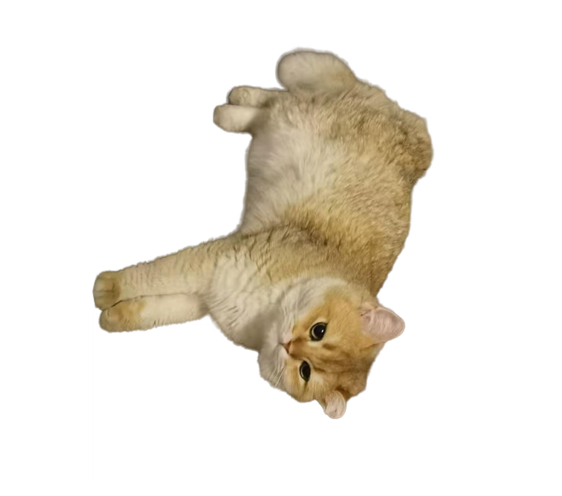

Cat Dream
On a night of boiling water, a drunken man, and a grey British Shorthair who knew better than all of us.
From a looming, trivial trembling sound, to crisp and incessant louder crackings, and eventually heavier and more interior shakes. Listening, I stood in a room in front of a boiling kettle. It was the kitchen in our apartment, with two broad windows overlooking the streets, which were at the moment glossed by a distorted silhouette of me within unintelligible shapes of kitchen electronics. The room was illuminated in the color of an orange so ripe that it's on the brink of rotting, and a thin smell of wine wafted in from the open door leading to the living room. I was back then twelve years old, had just gotten out of my bed after trying, or, feigning, to sleep for ten minutes but still had my socks on. The kitchen floor was passing on to my soles a sticky, magnetic chill.
I knew he had just returned from "the gatherings." The gatherings were smoky rooms with the smell of alcohol where men talked loudly. When they were excited, they pulled or pushed each other so heavily that they seemed to be hitting each other. Had I happened to be there, he, drunken, eyes watery from drinks, displaying more unpredictable and exaggerated emotions, dragged me or held me in his arms, introducing me to his friends, repeating "my daughter, my daughter is perfect on all aspects, despite that she was never really close to me," looking into me, smiling, eyes watery, "isn't it," and insisting, "is that right?"
I needed to get up from bed and boil some water so that I could walk over with a cup of tea when he "played" with the cat. Standing in the kitchen, I could nevertheless follow up, frame by frame, with what was happening in the living room. Our British Shorthair was a solid assembly of muscles covered by velvety grey fur, with a self-contained, aloof, but kind nature. Now I could see it, curled up and lying on its usual spot at the end of the sofa, tensing its muscles and trembling its ears. Its actions deepened the elegant upheavals on its contour, and its size looked slightly different from the moment before. He now walked toward it, in a slow pace, and stopped in front of it, taking his time to study its look. He would smile in this serene way that humans smile at animals. And he would call it, "Baby cat, get up, why are you already sleeping?" There was a short, pleasant chuckle. "Don't you know Dad is back? You haven't seen Dad the whole day, don't you ever miss me, huh?" He sat down beside the cat and the sofa cushion sank to the extent that the cat would be, though minimally, slipping toward him, which would allow it to try to be on its feet. So he fetched it, lifting its upper body so that it stood as if it's human, forced the cat to face him, and lowered his head, pressing his nose to the cat's nose. "Huh? Hmn? Stand well; I'm doing this because I like you." And this was when I should appear with my tea, before the cat got so pissed that it automatically cut him with its paws.